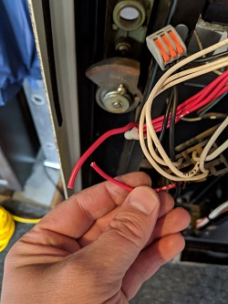
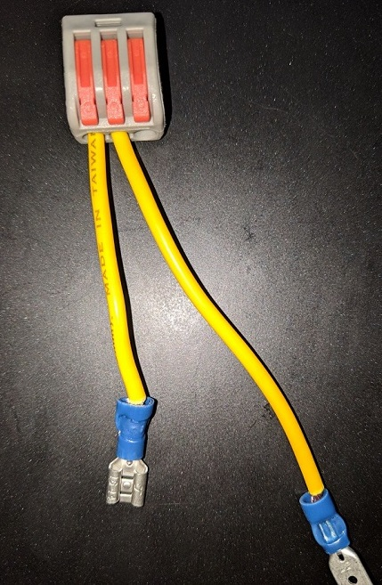
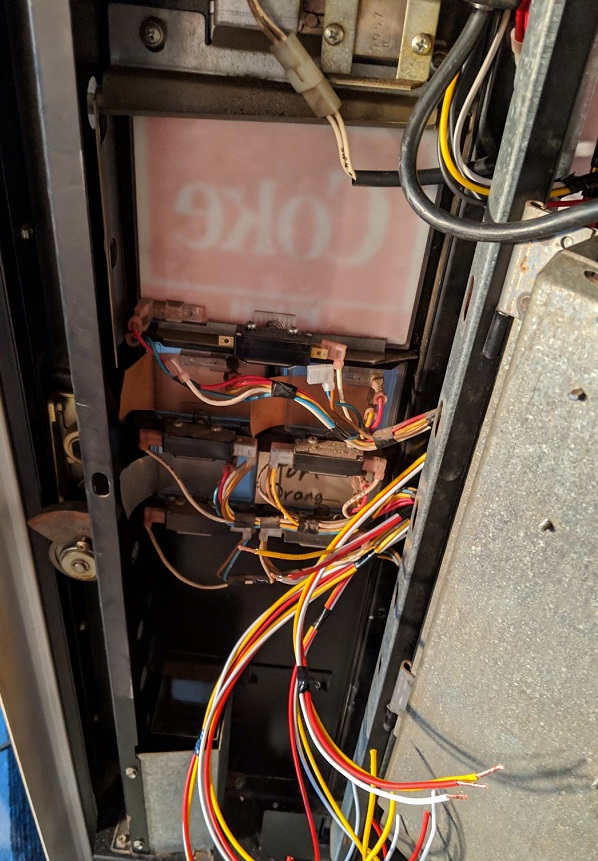

FAST (Father and Son Team) Hacks are our way of spending time together and learning new skills. In this hack, Peter (father) and Xander(son) are connecting a vintage pop machine to the internet. Why? Because pop machines are cool, and so is the internet.
We are not the first to own a personal pop machine, nor are we the first to fill a pop machine with various other beverages. But we could very well be the first to say 'Alexa, get me a beer from the pop machine'.
Hardware
Required Equipment
We found our pop machine for sale on Kijiji. It was still being used in the back of an old garage, and required a good cleaning to get the dust and grease off. The machine will have a manufacturer stamp that contains a sales model that you can Google to obtain information. We were not so lucky with this particular model, but the wiring diagrams contained inside the machine were still in readable condition.
We chose to use a Raspberry Pi 3 that will run a server we can communicate with, and a Kuman K30 5V 8 Channel Relay Shield Module to activate the coin credit mechanism and simulate pop selectoins. These relays can be triggered by the 3.3v GPIO pins on the Pi - some models we tried required 5v. Both products we used can be found on Amazon:
Raspberry Pi 3 Kuman 8 Channel Relay ModuleA good set of crimpers is a must, as are wire strippers, and at least 3 different colors of 16 gauge wire. The Hilitand connectors are a real time saver, and you will need many of the 3-Way types, as well as both female and male Quick Connectors (the blue things attached to the yellow wire in the picture above), and female to female Dupont connectors to connect the Pi GPIO (General Purpose Input/Output) pins to the Relay Module pins.
Hilitand Reusable Spring Lever Terminal Block Connector Dupont ConnectorsPower Tap
When you first open the door on our pop machine, you are greeted with the coin mechanism. There is a small clip to undo, and this swings open to reveal the selector switches behind. The Jones Plug wired to the coin mechanism connects to the pop machine power feed, as well as the selector switches. This is the primary interface that we will tie into.
We quickly located the model number of the coin mechanism (a Coinco 9300-S) and within a few minutes Xander had found a full operations manual and wiring schematic. We removed the female receptacle for the Jones Plug, and this is where we will make the first incision. Make sure Power is Off!
After removing the female end of the Jones Plug from its housing, you can see which wires correspond to which pins in the wiring diagram. To power the Raspberry Pi, we will splice into the wires connecting to Pin 1 (VAC HOT) and Pin 2 (VAC NEUTRAL), which are the black and red wires respectively. After cutting the black wire, we used the 3-Way Hilitand connectors to rejoin the black wire, then repeated the procedure on the red wire. This restored the power to the coin mechanism, but allowed us to connect a power plug receptacle using the 3rd slots in the Hilitand connectors. Using the power adpater provided with the Raspberry PI, you can plug it into this receptacle and the adapter will insure that 5V power is provided to the Pi.
Coin Bypass
The coin mechansim is designed to collect coins and dispense change. Once the required credit is reached, the logic board activates the vend relay for 250ms, and now the selector switches can be used to select a beverage. There are a number of options to bypass this mechanism. Xander wanted the machine to continue to function normally for manual operation, so this required that we splice into the existing circuitry, not overlay a new one. So rather than connecting Pin 3 to Pin 7 and calling it done, we elected to wire these up to the first relay on our Raspberry Pi, and use software to activate the vend relay.
The relays on the Kuman relay module are each marked with a NO (Normal Open), NC (Normal Closed) and COM (Common) label. The relay COM connects to Pin 1 (VAC HOT), relay NC connects to Pin 7 (VEND RELAY-NORMALLY CLOSE(HOT)), and relay NO connects to Pin 3 (VEND RELAY-NORMALLY OPEN). We wired the coin bypass to the first relay on our relay module. We used black wire for COM, white for NO, and yellow for NC.
To test the bypass we wired up our Raspberry Pi to the Kuman Relay Module. This requires providing 5V power to the relay board by connecting Pi pin 2 to relay module pin VCC, and ground by connecting Pi pin 39 to relay module pin GND. We then connected Pi pin 11 (GPIO 17) to relay module IN1, which corresponds to the relay we have wired for the coin bypass.
Connecting a keyboard, monitor, and mouse to our Pi, we plug the Pi into the power receptacle, and then plugged in the fridge. Note that our Pi was previously booted and updated following the instructions that came with the Pi. Open a command prompt and execute the commands below. When you enter the third command (echo "out") you should test that the vend relay is not activated already by pressing any of the vending selector switches. If a pop dispenses, the NC and NO are reversed. If nothing happens, proceed with the remaining commands. You should hear the relay activate when you set the value to 1, and deactivate when you set it to 0. You can now press a selector switch and pop should dispense. Congrats you have bypassed the coin credit system.
Command Prompt:
sudo -i
echo "17" > /sys/class/gpio/export
echo "out" > /sys/class/gpio/gpio17/direction
echo "1" > /sys/class/gpio/gpio17/value
echo "0" > /sys/class/gpio/gpio17/value
echo "17" > /sys/class/gpio/unexportNote that this can take a bit of trial and error, and some of the GPIO pins on the Pi are active "high", and some "low". Likewise, the relay module itself my be active hi or active low. All this really means, if you consider a light switch, is whether it is in the up or down position by default. For purposes of our hack we selected pins that were active hi and mapped our NC and NO connections accordingly, so if you follow suit and have the same relay module you should be fine. Worse case scenario is a bit of rewiring. We read a lot of information on the web about how to fix this with invertors, pull-up resistor, etc. Just reverse NO and NC and move on - it's not worth it.
Selector Switches
Prepare for a lot of wiring at this point. On our machine we have 5 selector switches. If you look closely, the switch itself is also labelled with our familiar NO (NORM OPEN), NC (NORM CLOSED), and COM (COMMON). We were fortunate to have a nice little spot above the coin mechanism to place our relay and Pi. We lined this with and antistatic mat which also serves to protect the back of the relay circuit board from comming into contact with the metal chasis. We created 5 bundles of 36" lengths of wire, with red, yellow, and white wire in each. These were tied together every 6" with electrical tape to keep each bundle separate from the others. We used white for COM, red for NO, and yelllow for NC. Note that this color mapping differs from that used for the coin bypass (basically we ran out of black wire).
Xander then set to work on creating the "splicers" for the selector switches themselves. Each splicer contains a male connector and female connector joined into a 3-Way Hilitand connector. For each switch there are three splicers - one red, one white, one yellow. The 36" wire bundles were routed from the Kuman Relay Module down the existing wiring harness and into the selector switch area. Zip ties keep everything neat and tidy. A yellow splicer is shown below.
 For each three wire bundle, connect the appropriate wire colors to the corresponding splicer colors. Starting with the top switch, pry off the female connector on the COMMON switch pole and plug it into the white male splicer connector, and then connect the white female splicer back to the COMMON switch pole. Next pry off the NORM CLOSED female connector from the switch pole, and connect it to the yellow male splicer, and connect the yellow female splicer back to the NORM CLOSED switch pole. Finally, pry off the NORM OPEN female connector from the switch pole, connect it to the male red splicer, and connect the female red splicer back to the NORM OPEN switch poll. Repeat for all switches. If you lose track of which wire bundle connects to which relay you can use a multi-meter to figure this out. The switches are numbered in the circuit diagram, and we made certain to connect the relay module in the same order to make programming easier. So relay module 2 goes to switch 1, module 3 to switch 2, and so on, since we elected to use relay module 1 for the coin bypass.
You can continue to use the previous command line instructions to test each selector switch by first activating the coin bypass (GPIO 17), and then repeating the same commands for the GPIO tied to your relay (replacing the GPIO number accordingly in each command). We mapped the relays as follows:
Pin 11 (GPIO 17) to Relay IN1 (for Vendo coin activation)
Pin 13 (GPIO 27) to Relay IN2 (for beverage 1 selection)
Pin 15 (GPIO 22) to Relay IN3 (for beverage 2 selection)
Pin 12 (GPIO 18) to Relay IN4 (for beverage 3 selection)
Pin 16 (GPIO 23) to Relay IN5 (for beverage 4 selection)
Pin 33 (GPIO 13) to Relay IN6 (for beverage 5 selection)
Hardware Ready
After splicing our relays into all the selector switches, we gently pushed all the wiring into the space remaining around the selector switches, and verified all the manual buttons could still be pressed without interference from the additional wiring. We closed the coin mechanism over the selectors. Below is the finished result.
Software
GitHub Project
The software is fully contained in the github project associated with this page. In addition to the software, instructions for wiring up Twilio are included, but for the Alexa skill you will be on your own. The skill handler is included in the software, but the creation of the skill itself will need to be completed by yourself. Tutorials abound on the internet.
Improvements
The following software additions have been considered:
1. Tracking beverage usage by phone number - useful for billing
2. Tracking inventory - SMS to owner when supplies are low.
3. Paid SMS - receive payments from phone company for SMS users via a per charge SMS number
4. Alexa facts - state useful facts for the beverage dispensed
5. Alexa integration - add the full Alexa client into the Pi, and add microphone and speaker, to remove need for external Alexa speaker.